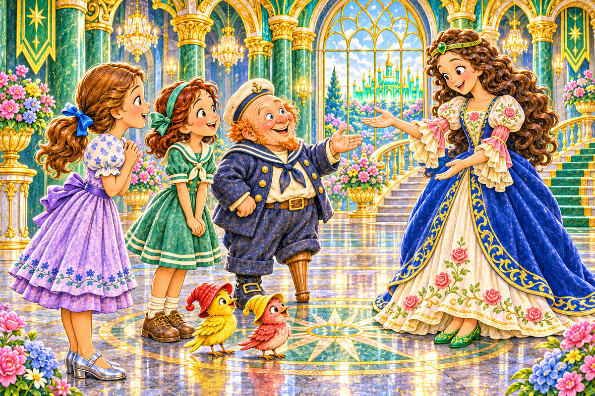
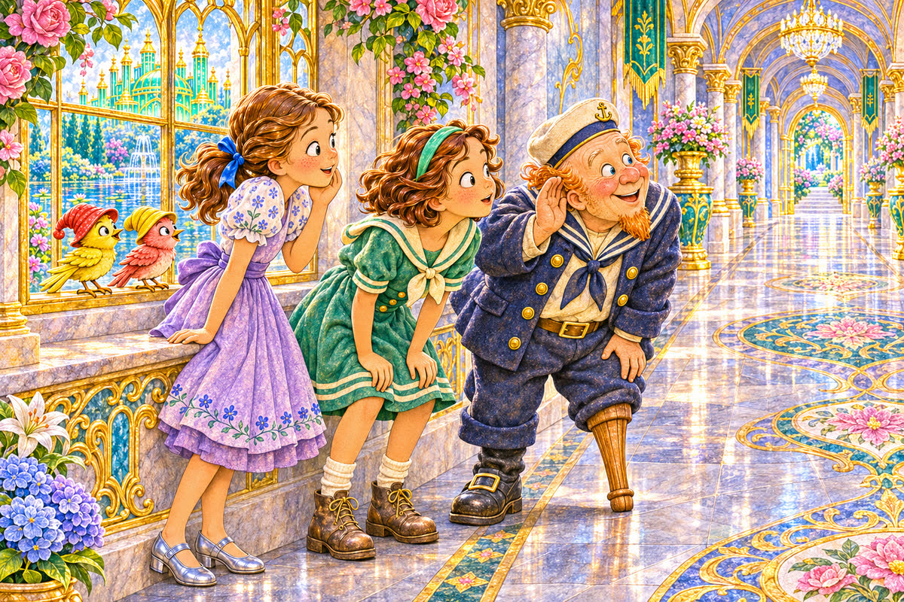
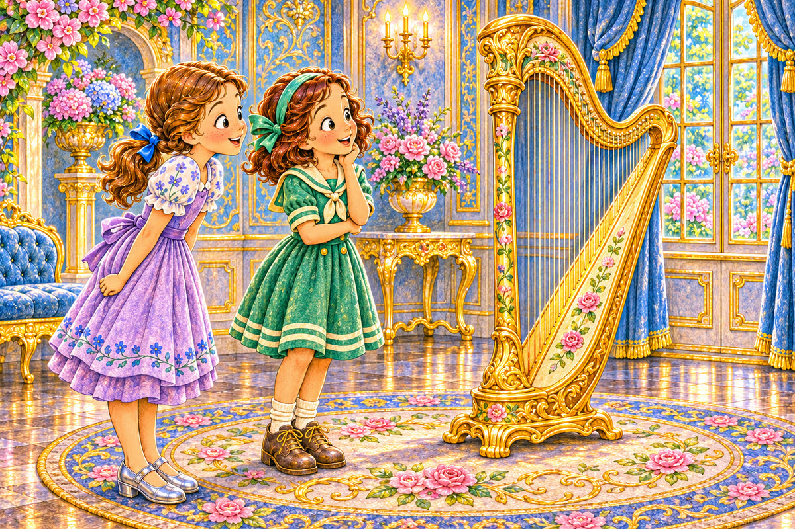
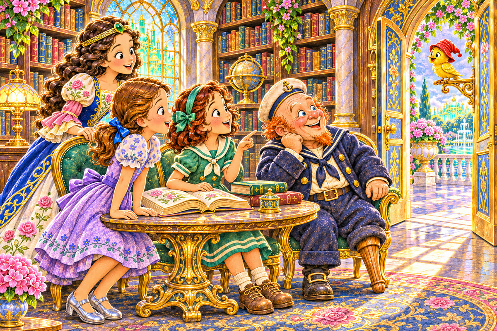
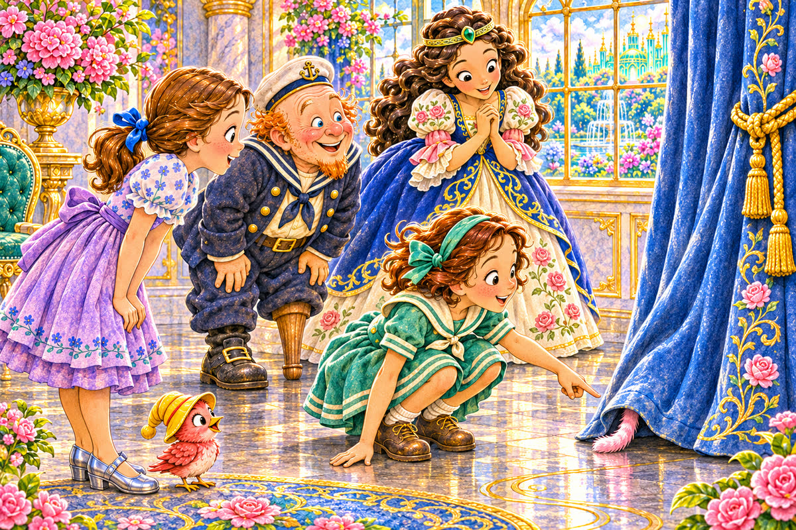
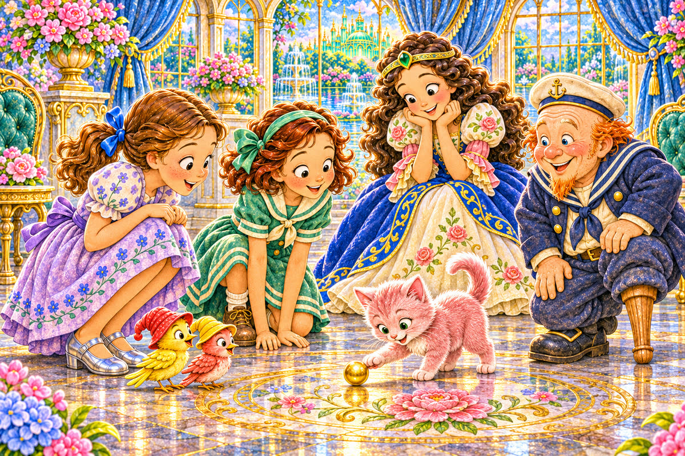
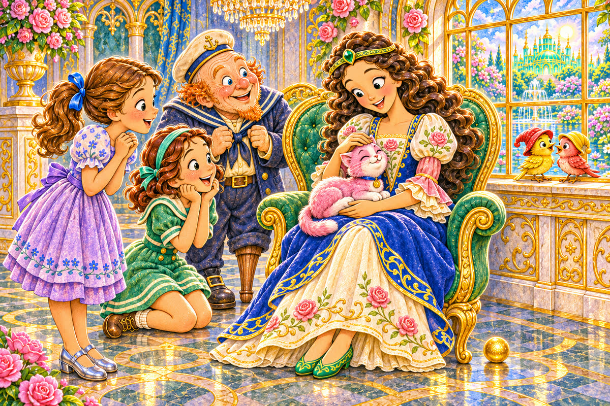

Pahina 1
Itinali ni Dorothy ang buhok niya gamit ang asul na laso. Kasama sina Trot at Captain Bill, pumasok siya sa palasyo ni Ozma.
Isang munting kuwento sa Lupain ng Oz
Isang pahina muna, o tatlo kung gusto mo.

Itinali ni Dorothy ang buhok niya gamit ang asul na laso. Kasama sina Trot at Captain Bill, pumasok siya sa palasyo ni Ozma.

Sinalubong sila ni Ozma sa malaking bulwagan. Dumapo ang dalawang ibon sa tabi ng bintana. Biglang may narinig silang mahinang tunog.
“May tumutugtog ba?” tanong ni Trot. “Tingnan natin,” sabi ni Captain Bill. Naglakad sila sa mahabang pasilyo. Sumama sa kanila si Ozma.

Sa unang silid, may malaking alpa sa tabi ng bintana. Walang tumutugtog. Lumapit si Trot sa alpa, pero tahimik ito.
Narinig nila ulit ang tunog. “Parang may gumugulong,” sabi ni Captain Bill. “Doon sa kabila.” Lumipad ang ibong dilaw papunta sa kabilang silid.
Pumasok sina Dorothy at Trot sa silid na puno ng mga aklat. Tumingin sila sa ilalim ng mesa. Wala silang nakita roon.

Dumapo ang ibong dilaw sa tabi ng bukas na pinto. Narinig ni Dorothy ang tunog mula roon. Pumasok ang dalawang bata.

Sa loob, nakita ng ibong pula na gumalaw ang asul na kurtina. Bumaba siya sa sahig. Itinuro ni Trot ang maliit na buntot.
Dahan-dahang hinawi ni Trot ang kurtina. Naroon ang kulay rosas na kuting ni Ozma. Tinulak ng kuting ang maliit na gintong bola.

Gumulong ang bola sa sahig. Narinig nila ang tunog. “Iyon pala!” sabi ni Dorothy. Kinuha niya ang bola at lumapit ang kuting.
Bumalik sila sa bulwagan. Sumunod ang kuting kay Dorothy. “Heto ang bola,” sabi ni Dorothy. Inilapag niya ito sa tabi ng silya ni Ozma.

Tumalon ang kuting sa kandungan ni Ozma. Dumapo ulit ang dalawang ibon sa tabi ng bintana. Ngayon, tahimik na ang buong bulwagan.
Kung gusto ninyong mag-usap